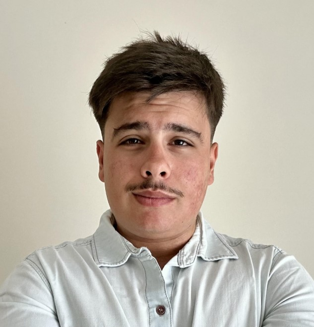

Sobre mí

Nombre Completo: Thomas Delli Antoni
Edad: 25 años
Ubicación: Copenhagen, Dinamarca
Carrera: Licenciatura en Gestión de Tecnologías de la Información
Intereses: Me interesa el desarrollo web, la gestión de proyectos IT y aprender nuevas tecnologías.